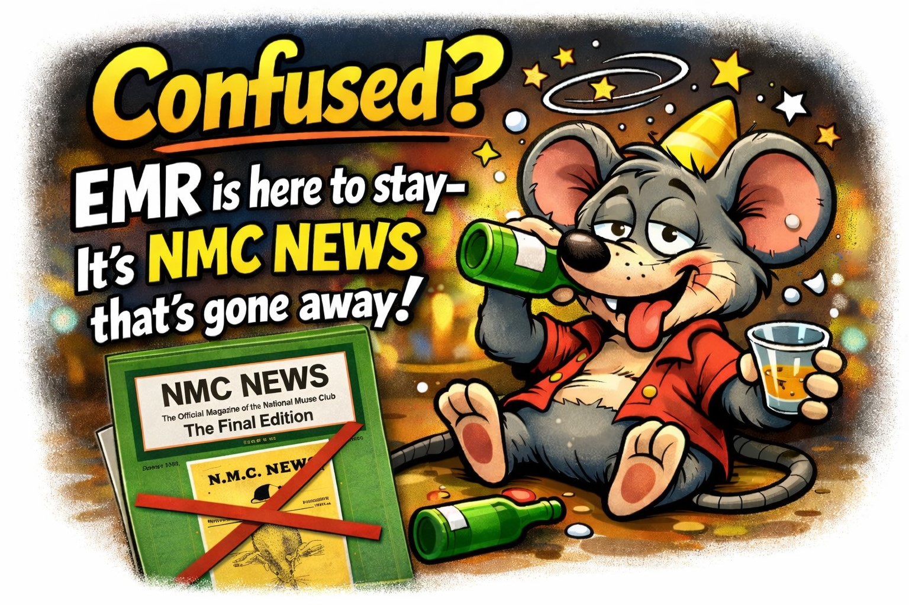
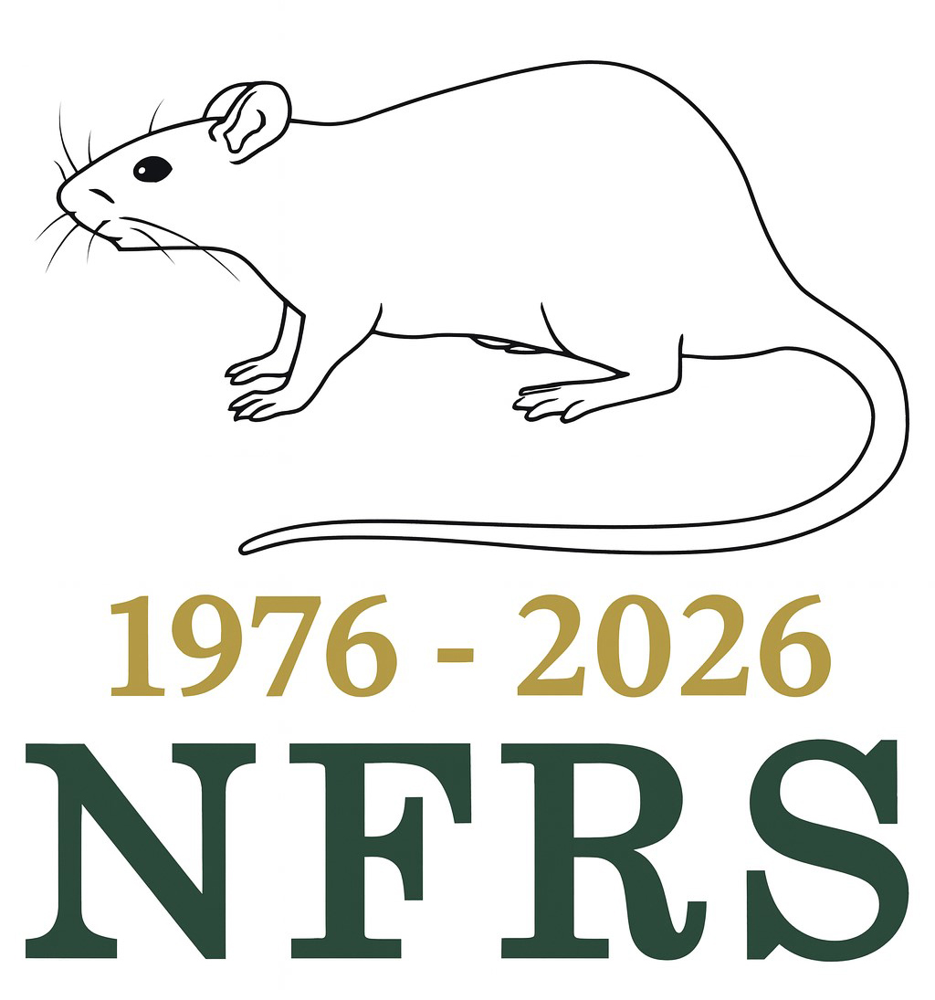
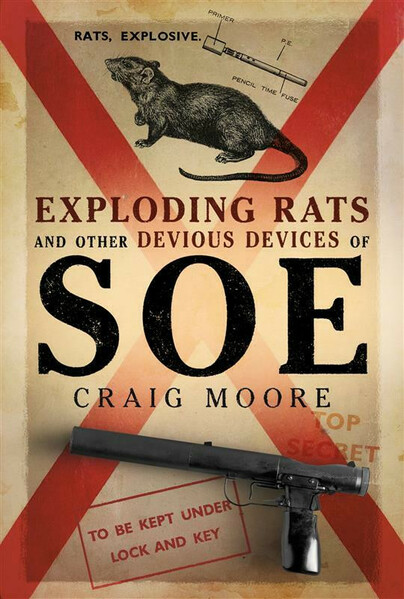

Exhibition Mouse & Rat (EMR) is the monthly communication of the London & Southern Counties Mouse & Rat Club (LSCMRC) which we have published for more than 40 years. This is EMR Update 18.1.26. It is better viewed on a mobile phone. It is emailed to keep members and friends updated on club communications, as well as items of interest from other clubs and in the press and wider media. [It is still in a pilot phase and we invite comment from members. Note that some articles and images may be republished in EMR].
In this Update
EMR Confused?
A Happy New Year to all our members and friends!
A few were confused after our well-received EMR Update appeared shortly before Christmas. They thought it was the end of our print and PDF version of EMR. This is NOT the case - EMR has been published since 1981 (in print form back then and in PDF format for many years and now). A very happy mouse at our New Year Celebrations was able to confirm the situation!
Northern Mites: Spotting mites at shows; Why infra-red won’t help; and what might (mite ... haha)

Early in 2025 reports were coming from the NMC of problems with at shows and the introduction of draconian rules from the Executive - a new red card transformed the desirable prize card into an exhibitor death-warrant to be handed out by anti-mite officials. Of course, when looked at calmly it is a common problem of breeding and exhibiting small livestock. They are normally discovered by the judge and, certainly during my rather long stay in the mouse fancy, have been dealt with by the judge having a word with the show secretary and the show secretary having a quiet word with the exhibitor. With modern technology is it possible to screen mice quickly and fairly for ectoparasites prior to judging using an infra-red or similar scanner? LSC looks into it.
NFRS celebrates 50 years!
Congratulations to NFRS who celebrate 50 years having been founded on 13th January 1976. Whilst NFRS and LSC rat members have been preparing for this important anniversary, it is less well-known that the 'baby' was born at LSC who nurtured its beginnings (and before) with a rat section. Expect to see special celebration prize cards and historic articles and photographs in EMR throughout this celebration year.
Rats go with a Bang!!
James Bond has Q Branch to supply him with ingenious equipment to use on his missions; during the Second World War, the British Special Operations Executive (SOE) field agents had the Camouflage Section. The men and women of the Section, hailing from a variety of trades and professions, turned everyday items into concealment devices to carry weapons, ammunition, film, radios, false documents, microfilm and codes. Explosives and incendiary devices for industrial and military sabotage were concealed in dead rats, as well as hollowed-out pieces of coal, books, torches, statues and suitcases. After the war, SOE’s Camouflage Section was dissolved, but not before its work was collated and published in a secret document. That document remained classified for thirty years. This is the first time it has been presented in a book to the public - Exploding Rats and other Devious Devices of SOE edited by Craig Moore, an ex police sergeant with the Metropolitan Police. The book costs £17.60.
Future Developments 2026 - Now ...
LSC's Entry forms are redesigned by AI

Forms, and user interfaces (UI) are part of out lives from birth to death. Many people hate completing forms largely because of a fear of "doing it wrong". So LSC and AI is working on making our forms and UX's (User Experience) for your entries to our shows as easy as possible. But, for those who prefer to enter on line, we have a new system which gives you a choice. You can either follow the simple "rules" of how to make your entry or opt for our freeform system. There you type your entries as you want and showprog will sort them out. Between now and the next EMR we WANT YOU to make some entries for the show. They won't be taken as true entries but they will enable us to hone the system so that it works perfectly by the time that you do make your entries for the 6 February show. Give it a go Now!
© 2026 LSCMRC